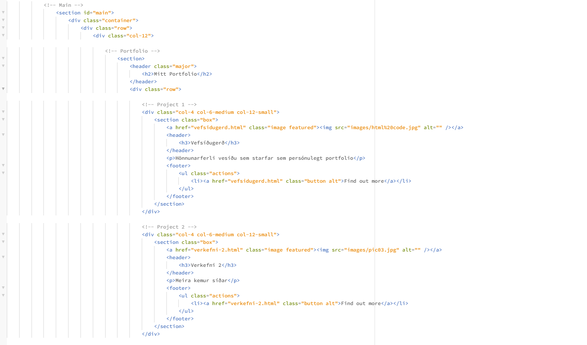

Vefsíðugerð
Net portfolio
Fyrir verkefnið hafði ég enga reynslu af HTML en með gervigreindartólum og öðrum hugbúnaði varð ferlið afar straumlínulagað.
Val á sniðmáti
Þar sem reynsla mín á HTML var lítil sem engin ákvað ég að leita af flottu sniðmáti til þess að koma boltanum af stað. Ég var strax kominn með hugmynd útliti vefsíðunar áður en ég hófs handa við leitar mátsins. Ég vildi að við fyrstu opnun síðunar að skýrt vær hver ég væri. Þetta sniðmát var því fullkomið þar sem mátið bíður upp á einskonar ,,highlights" sem gerir hönnuði kleift á að grípa athygli notenda við fyrstu opnun síðunnar.
Hinsvegar þurfti að lagfæra síðuna tölvuert. Upprunalega sniðmátið hafði fullt af óþarfa hlutm í sér svosem kort, dagatal og bloggsíðu, það fyrstya sem ég gerði var einfaldlega að eyða þeim úr kóðanum. Næst þurfti að setja um rétt magn af innri síðum sem verkefnin gætu komið síðar í. Hér er hægt að sjá hvernig síðum 1 og 2 var bætt inn.

Til þess að koma inn skjáskotum eins og þessu hér að ofan nýtti ég gervigreind sem gaf mér þessa lausn.

Við gerð síðunnar nýtti ég hugbúnaðinn pheonixcode frá brackets.io sem býður upp á live sjón á vefsíðunni sem var mjög hentugt fyrir óreyndan HTML notanda.
Tölvustudd Framleiðsla
Það sem ég vil fá úr áfanganum tölvustudd framleiðsla er að missa ,,inventor gleraugun" sem eru gleraugu sem yngri verkfræðingar eiga til að setja á sig. Þetta eru gleraugu sem ungir verkfræðingar eru með á sér þegar þeir hanna nýja parta sem koma svo í ljós að ómögulegt sé að búa til í raunheimnum. Eina leiðin til þess að taka þessi gleraugu af sér að fá reynslu af mismunandi framleiðslu ferlum sem þessi áfangi bíður upp á.
Sem lokaverkefni langar mig að búa til eitthvað ,,cool", þótt það hljómi kannski vítt og smá barnalegt er það eins helsta ástæða fyrir því að ég fór í vélaverkfræði, mig langar að geta skapað flotta hluti með mismunandi aðferðum alveg sjálfur.
Setja Vefsíðuna á netið
Ég notaði Github til að búa til Repository þar sem ég hlóð upp öllum gögnunum sem síðan notar. Þar á eftir nota ég GitHub pages til þess að hlaða síðunni upp á netið. Allt ferilð var mjög einfalt og sjálfvirk
Github repositroy